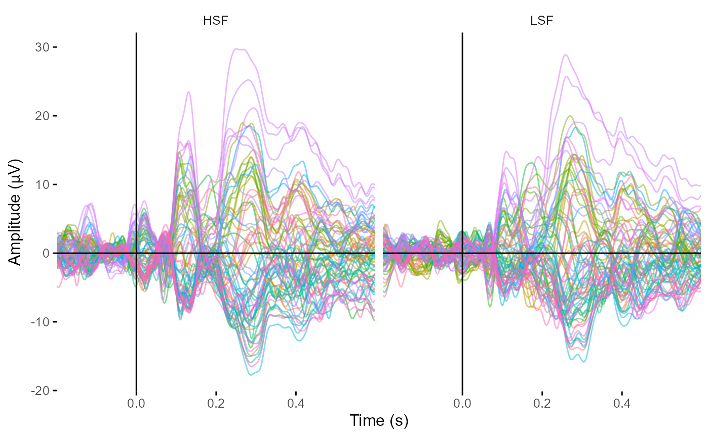

vignettes/epoch-handling.Rmd
epoch-handling.Rmd#> EEG data
#>
#> Number of channels : 72
#> Electrode names : A1 A2 A3 A4 A5 A6 A7 A8 A9 A10 A11 A12 A13 A14 A15 A16 A17 A18 A19 A20 A21 A22 A23 A24 A25 A26 A27 A28 A29 A30 A31 A32 B1 B2 B3 B4 B5 B6 B7 B8 B9 B10 B11 B12 B13 B14 B15 B16 B17 B18 B19 B20 B21 B22 B23 B24 B25 B26 B27 B28 B29 B30 B31 B32 EXG1 EXG2 EXG3 EXG4 EXG5 EXG6 EXG7 EXG8
#> Sampling rate : 512 Hz
#> Reference :In this example, we’re going to look at how to handle epoching and events. To start, we have continuous data from 70 channels sampled at 512 Hz, average referenced, and bandpass filtered from 0.1 to 40 Hz. There is a complete table of all of the events imported with the data. We can use that table to form epochs.
eeg_example
#> EEG data
#>
#> Number of channels : 70
#> Electrode names : A1 A2 A3 A4 A5 A6 A7 A8 A9 A10 A11 A12 A13 A14 A15 A16 A17 A18 A19 A20 A21 A22 A23 A24 A25 A26 A27 A28 A29 A30 A31 A32 B1 B2 B3 B4 B5 B6 B7 B8 B9 B10 B11 B12 B13 B14 B15 B16 B17 B18 B19 B20 B21 B22 B23 B24 B25 B26 B27 B28 B29 B30 B31 B32 EXG1 EXG2 EXG3 EXG4 EXG5 EXG6
#> Sampling rate : 512 Hz
#> Reference : average
events(eeg_example)
#> # A tibble: 468 x 3
#> event_onset event_time event_type
#> <dbl> <dbl> <dbl>
#> 1 475 0.926 18
#> 2 737 1.44 123
#> 3 1252 2.44 125
#> 4 1674 3.27 219
#> 5 2066 4.03 202
#> 6 2681 5.23 50
#> 7 3470 6.78 7
#> 8 3731 7.29 123
#> 9 4246 8.29 125
#> 10 4668 9.12 208
#> # ... with 458 more rowsThere are 18 unique trigger codes, which we can check with list_events().
list_events(eeg_example)
#> event_type
#> 1 18
#> 2 123
#> 3 125
#> 4 219
#> 5 202
#> 6 50
#> 7 7
#> 8 208
#> 9 51
#> 10 21
#> 11 222
#> 12 12
#> 13 213
#> 14 6
#> 15 207
#> 16 14
#> 17 215
#> 18 99In this experiment, six of those triggers correspond to condition codes.
| Trigger | Semantic type | Spatial frequency |
|---|---|---|
| 207 | Match | High |
| 208 | Match | Low |
| 213 | Mismatch | High |
| 215 | Mismatch | Low |
| 219 | Nonsense | High |
| 222 | Nonsense | Low |
We can use the epoch_data() function to create epochs around each of these triggers, and label those epochs accordingly. In this example, I’ll label each trigger using hierarchically coded event tags, simultaneously giving each condition of semantic type and spatial frequency separated by a “/” symbol.
example_epochs <-
epoch_data(eeg_example,
events = c(207,
208,
213,
215,
219,
222),
epoch_labels = c("Match/HSF",
"Match/LSF",
"Mismatch/HSF",
"Mismatch/LSF",
"Nonsense/HSF",
"Nonsense/LSF"),
time_lim = c(-.2, .6))
#> The current default value of baseline, NULL,
#> will change to 'none' in v0.6 of eegUtils,
#> performing no baseline correction.
#> Adjusting output limits to match sampling rate.
#> Output limits: -0.19921875 0.599609375
#> Removing channel means per epoch...
#> Creating 78 epochs.
events(example_epochs)
#> # A tibble: 78 x 6
#> event_onset event_time event_type event_label epoch time
#> <dbl> <dbl> <dbl> <chr> <dbl> <dbl>
#> 1 1674 3.27 219 Nonsense/HSF 1 0
#> 2 4668 9.12 208 Match/LSF 2 0
#> 3 7565 14.8 222 Nonsense/LSF 3 0
#> 4 10613 20.7 208 Match/LSF 4 0
#> 5 13486 26.3 213 Mismatch/HSF 5 0
#> 6 16263 31.8 207 Match/HSF 6 0
#> 7 19293 37.7 215 Mismatch/LSF 7 0
#> 8 22069 43.1 208 Match/LSF 8 0
#> 9 25063 48.9 222 Nonsense/LSF 9 0
#> 10 27912 54.5 213 Mismatch/HSF 10 0
#> # ... with 68 more rows
epochs(example_epochs)
#> # A tibble: 78 x 5
#> epoch participant_id recording event_type epoch_labels
#> <dbl> <chr> <chr> <dbl> <chr>
#> 1 1 S2 S2B1 219 Nonsense/HSF
#> 2 2 S2 S2B1 208 Match/LSF
#> 3 3 S2 S2B1 222 Nonsense/LSF
#> 4 4 S2 S2B1 208 Match/LSF
#> 5 5 S2 S2B1 213 Mismatch/HSF
#> 6 6 S2 S2B1 207 Match/HSF
#> 7 7 S2 S2B1 215 Mismatch/LSF
#> 8 8 S2 S2B1 208 Match/LSF
#> 9 9 S2 S2B1 222 Nonsense/LSF
#> 10 10 S2 S2B1 213 Mismatch/HSF
#> # ... with 68 more rowsAs can be seen, this modifies the epochs structure so that it now labels each epoch accordingly. Since we have hierarchically encoded event tags, an easy way to split that into multiple columns is using the separate() function from the tidyr package.
epochs(example_epochs) <- tidyr::separate(epochs(example_epochs),
col = epoch_labels,
into = c("Semantics", "SF"))
epochs(example_epochs)
#> # A tibble: 78 x 6
#> epoch participant_id recording event_type Semantics SF
#> <dbl> <chr> <chr> <dbl> <chr> <chr>
#> 1 1 S2 S2B1 219 Nonsense HSF
#> 2 2 S2 S2B1 208 Match LSF
#> 3 3 S2 S2B1 222 Nonsense LSF
#> 4 4 S2 S2B1 208 Match LSF
#> 5 5 S2 S2B1 213 Mismatch HSF
#> 6 6 S2 S2B1 207 Match HSF
#> 7 7 S2 S2B1 215 Mismatch LSF
#> 8 8 S2 S2B1 208 Match LSF
#> 9 9 S2 S2B1 222 Nonsense LSF
#> 10 10 S2 S2B1 213 Mismatch HSF
#> # ... with 68 more rowsAny columns in the epochs structure are included when converting to a data frame. This has a lot of advantages for plotting; many plotting commands now allow you to use facet_wrap() and facet_grid() from ggplot2 to facet on any of the columns from the epoch structure. Note that for performance reasons, facetting must be explicitly allowed using allow_facets = TRUE, since ggplot2’s stat_summary() function can be extremely slow.
library(ggplot2)
plot_butterfly(example_epochs,
legend = FALSE,
baseline = c(-.1, 0),
allow_facets = TRUE) +
facet_wrap(~SF)
#> Joining, by = c("epoch", "participant_id", "recording", "event_type", "Semantics", "SF")
#> Joining, by = c("epoch", "participant_id", "recording", "event_type", "Semantics", "SF")